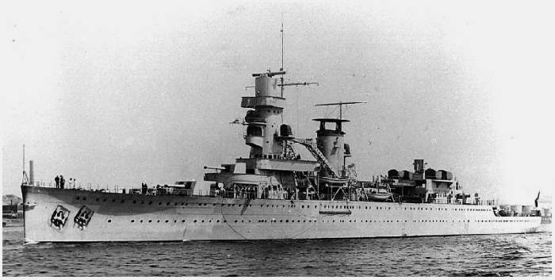

| Naam | De Ruyter |
|---|---|
| Foto |  |
| Waterverplaatsing | 6650 ton |
| Snelheid | 32 knopen |
| Bemanning | 435 |
| Afmetingen | 171m x 15,7m x 5,1m |
| Bewapening | 7x 150 mm Bofors No. 9 en No. 10 (No. 9 3x2; No. 10 1x1) 10x 40 mm Bofors L/60 No.3 (5x2) 8x 13 mm Browning machine guns |
| Vliegtuigen | 2x Fokker C.XI-W Heinkel K 8 katapult |
| In dienst | 3 oktober 1936 |
| Uit dienst | Gezonken tijdens de eerste slag om de Javazee 28 februari 1942 |
De Ruyter